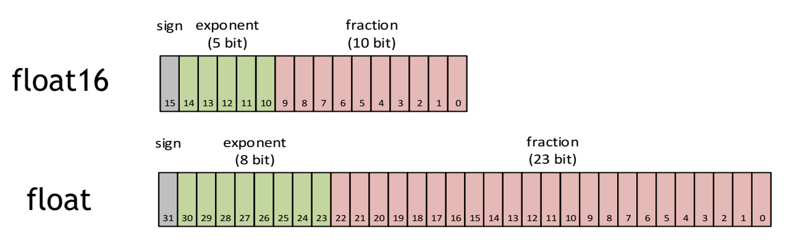

混合精度训练

混合精度训练可以在不改变网络架构的前提下，通过以半精度格式执行操作来显着提高计算速度，同时以单精度存储最少的信息以在网络的关键部分中保留尽可能多的信息。当前深度学习训练/推理使用的主流数值精度是32bit(即FP32)，随着深度学习商用硬件的发展，16bit(FP16/DFP16)混合精度在训练中的应用逐渐成熟，如Intel的NNP，NVIDIA的 Tensor Core。
什么是FP16？
半精度浮点数是一种计算机使用的二进制浮点数数据类型，使用2字节（16位）存储

其中，sign位表示正负，exponent位表示指数（2^(n−15+1(n=0))），fraction位表示的是分数（m/1024）。
为什么需要低精度
-
更少的显存占用 对比单精度，半精度仅占用一半的字节，相应地可以帮助训练过程节省一半的显存空间。得益于更少的内存占用，低精度也使得限定显存空间下训练更大的模型和更大的mini-batch成为可能。
-
更快的速度 通过 Tensor Cores能加速数学密集型运算，例如线性和卷积层。在大部分测试中，基于FP16的加速方法能够给模型训练带来两倍甚至更快的加速体验。
-
精度无损 不只是速度快、内存省，训练的效果也并无损失：

使用FP16表示/计算带来的问题：量化误差（Quantization Error）
上面列了这么多低精度的好处，那它有没有不好的地方，答案是肯定的。
 FP16的动态范围(6x10^-8 ~ 65504) 远低于 FP32的动态范围(1.4x10^-45 ~ 1.7x10^38)， 精度(2^-10) 远粗于 FP32的精度(2^-13)
FP16的动态范围(6x10^-8 ~ 65504) 远低于 FP32的动态范围(1.4x10^-45 ~ 1.7x10^38)， 精度(2^-10) 远粗于 FP32的精度(2^-13)
-
溢出错误 狭窄的表示范围带来的溢出错误（Overflow/Underflow）。由于FP16的动态范围比FP32的动态范围要狭窄很多，因此在计算过程中很容易出现上溢出（Overflow，g>65504）和下溢出（Underflow，g<6×10^−8）的错误，溢出之后就会出现“Nan”的问题。在深度学习中，激活函数的的梯度往往要比权重梯度小，更易出现下溢出的情况。

-
舍入错误 精度不足带来的舍入错误（Rounding Error）.当梯度过小，小于当前区间内的最小间隔时，该次梯度更新可能会失败

FP16/FP32混合精度训练
混合表示（Representation）
混合精度训练的精髓在于“在内存中用FP16做储存和乘法从而加速计算，用FP32做累加避免舍入误差”。所有权重、激活、梯度均使用FP16表示（存储。使用FP32作为累加器（Accumulator）用于累加FP16的乘积，只在写入内存前转换为FP16。为每一个权重，保留一个高精度（FP32）的主备份（Master Copy）

混合计算（Math）
对计算敏感型的层，如全连接层、卷积层等，直接使用FP16进行计算（当然还需要用FP32做累加器）。对BatchNorm、SoftMax等需要对整个 Tensor进行统计操作（如SUM）的， 可从内存读入FP16值后，进行FP32运算以保持精度
损失放大（Loss Scaling）
通过混合表示和混合计算，还是会存在有些模型仍无法收敛（如Multibox SSD with VGG-D）或准确率很差（如Seq2Seq），原因是激活梯度的值很小，超出FP16表示的范围，造成下溢出（Underflow）。解决激活梯度下溢出的思路：将所有的激活梯度都放大一定倍数
- 在反向计算开始前，将损失变化（dLoss）人为增大
- 基于Chain Rule，反向计算得到的所有梯度（激活/权重） 均放大了相同倍数
- 在权重更新前，将权重梯度缩小成正常值

AMP(Automatic Mixed Precision)在深度学习框架中使用
TensorFlow
TensorFlow(1.14以上版本)原生支持AMP技术，仅需将tf.keras.optimizers或tf.train包装一下即可：
opt = tf.train.experimental.enable_mixed_precision_graph_rewrite(opt)
PyTorch
PyTorch中需要借助apex这个库
from apex import amp
model, optimizer = amp.initialize(model, optimizer, opt_level="O1") # 这里是“欧一”，不是“零一”
with amp.scale_loss(loss, optimizer) as scaled_loss:
scaled_loss.backward()
MXNet
MXNet(1.5以上版本)也是原生支持AMP，增加以下代码开启：
amp.init()
amp.init_trainer(trainer)
with amp.scale_loss(loss, trainer) as scaled_loss:
autograd.backward(scaled_loss)